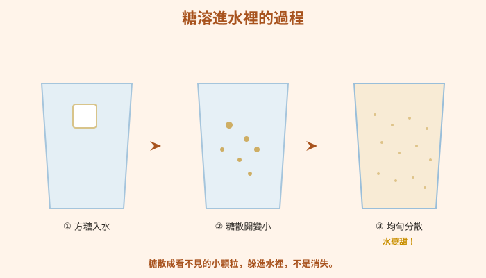
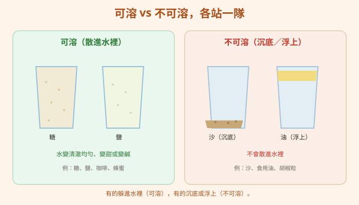
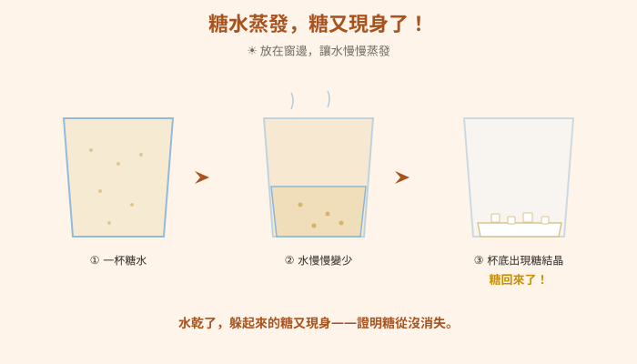
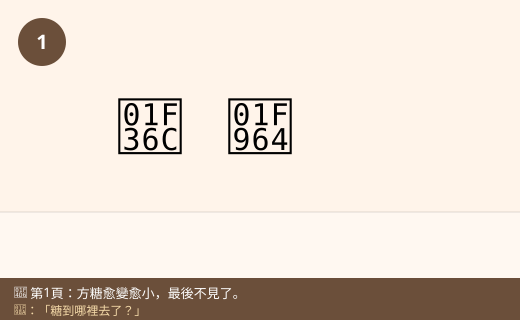
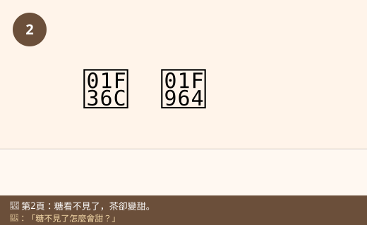
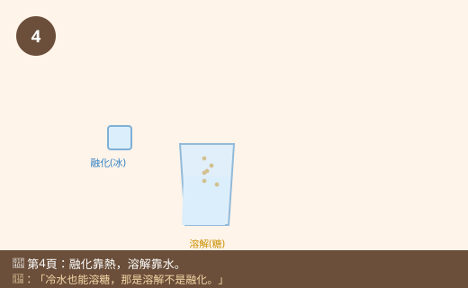
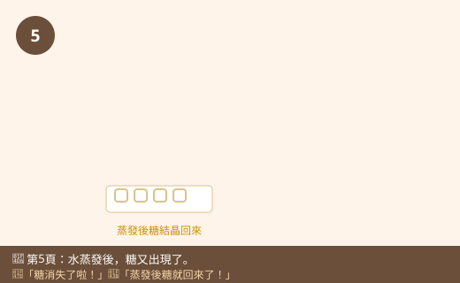
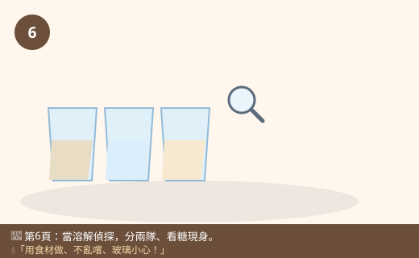

圖一（概念圖）：糖溶進水裡的過程

- 圖像目的
- 呈現溶解是溶質散成看不見的小顆粒均勻分散，未消失。
- 圖中應出現的元素
- 方糖入水 → 逐漸變小散開 → 均勻分散的小點（看不見）＋「水變甜」標示。
- 必須標示的科學概念
- 溶解＝均勻分散、糖沒消失。
- 圖說
- 「糖散成看不見的小顆粒，躲進水裡，不是消失。」
- AI 繪圖提示詞
- 溫暖手繪繪本風，三格：方糖入水、糖粒散開變小、整杯均勻小點並標「變甜」。繁體中文，白底。
- 避免畫錯的提醒
- 糖粒要「均勻分散」而非沉底；別畫成糖完全空白消失。
💡 一匙糖丟進水裡就「不見」了，水卻變甜了——糖沒有消失，它只是躲進水裡，玩起了溶解的魔法！
| 適合年級 | 國小三年級 |
|---|---|
| 可銜接年級 | 三年級 → 五年級（水溶液、溶解變因）→ 國中溶液濃度 |
| 主題分類 | 物質、熱與變化 |
| 核心概念 | 溶解現象；可溶與不可溶；溶解不是消失、也不是融化 |
| 關鍵詞 | 溶解、可溶、不可溶、水溶液、糖、鹽、溫度 |
| 可銜接的國中概念 | 溶液、溶質與溶劑、濃度 |
| 建議閱讀時間 | 約 15 分鐘 |
| 適合搭配的課堂活動 | 可溶不可溶大分類、糖水蒸發實驗、溫度與溶解 |
下午，小狐同學幫忙泡了一杯紅茶。他學大人的樣子，丟了一塊白白的方糖進去，攪一攪，「咦？」方糖竟然愈變愈小，最後整塊都不見了！杯子裡看起來還是紅紅的茶，糖到哪裡去了？他湊近看了又看，杯底也沒有，「難道方糖被紅茶『吃掉』了嗎？」
他忍不住嚐了一口——好甜！「糖明明看不見了，怎麼茶會變甜？」小狐同學一頭霧水。他又想起早上煮麵時，媽媽把鹽撒進滾水裡，鹽也一下子就不見了，湯卻變鹹了；可是奶奶在洗米的時候，米糠和沙子倒進水裡，卻沉在底下，怎麼攪都不會不見。「奇怪，為什麼糖和鹽會『不見』，沙子和米卻不會？」
更奇怪的是，他把沒喝完的糖水忘在窗邊，過了幾天回來看，水乾了，杯底居然出現了一圈白白的、黏黏的東西——嚐起來還是甜的！「這……這不就是那塊不見的糖嗎？它又跑回來了！」小狐同學驚訝得說不出話。
黑熊老師笑著說：「小狐，你發現了『溶解』的魔法！糖和鹽丟進水裡，會散成小到眼睛看不見的顆粒，均勻地躲進水中，讓水變甜、變鹹——這叫『溶解』。糖沒有消失喔，你把水蒸發掉，它就又現身了。可是沙子、米糠不會溶解，所以會沉在底下。我們來揭開廚房裡的溶解魔法吧！」
黑熊老師，方糖丟進紅茶就不見了，它是被茶吃掉了嗎？
沒有被吃掉喔！糖散成了小到看不見的顆粒，均勻地跑進水的每個角落，這叫「溶解」。因為糖還在水裡，所以茶會變甜。它只是「藏起來」了，不是消失。
那我怎麼證明糖還在？看又看不到。
兩個方法：第一，嚐嚐看，水變甜就代表糖還在（只有在乾淨安全的實驗才試吃）。第二，把糖水放著讓水慢慢蒸發，水乾了以後，糖又會變回白白的結晶出現——這就證明糖從頭到尾都沒有消失。
補一個冷知識！不是每種東西都能溶在水裡。糖、鹽、咖啡粉會「溶解」（可溶）；沙子、油、胡椒粒、麵粉大多不會溶解（不可溶），會沉在底下或浮在上面。所以做分類實驗，就能分出「可溶」和「不可溶」兩隊！
那溶解是不是就是「融化」啊？冰淇淋融化也是變不見……
這是很多人會搞混的地方！「融化」是固體「受熱」變成液體，像冰塊變成水、巧克力受熱變軟，靠的是溫度。「溶解」是東西「散進水裡」變成看不見，靠的是水。糖溶進水是溶解，不是融化——就算不加熱，冷水也能溶糖。
哼，糖溶進水裡就是消失不見了啦！變甜只是水本來就有的味道，跟糖沒關係～而且水裡的糖，加再多也一定溶得下，怎麼加都行！
迷思怪獸，兩個都錯囉！第一，把糖水蒸發，糖會跑回來，證明它沒消失。第二，水能溶的糖是「有限的」——一直加糖，加到某個程度水就溶不下了，多的糖會沉在杯底，這叫「溶解有限度」。不過提高溫度，通常能讓水溶下更多糖喔。
原來如此！那我可以怎麼觀察溶解的魔法？
我們來做兩個安全實驗！第一，把糖、鹽、沙、油、胡椒分別加進水裡，分「可溶／不可溶」兩隊。第二，泡一杯糖水，放窗邊讓水蒸發，看糖會不會現身。用食材做、不亂嚐不認識的東西、玻璃杯小心拿，做完洗手喔！
溶解：把糖、鹽這類東西加進水裡，它們會散成小到看不見的顆粒，均勻躲進水中，讓水變甜、變鹹。糖沒有消失——把水蒸發掉，糖又會變回來。有些東西可溶（糖、鹽、咖啡），有些不可溶（沙、油、胡椒），不可溶的會沉底或浮上來。要注意：溶解不是融化！融化是固體受熱變成液體（冰變水），溶解是東西散進水裡不見（糖入水），冷水也能溶糖。水能溶的糖也有限度，加太多會溶不下。
溶解是指某物質（溶質，如糖、鹽）均勻分散到另一物質（溶劑，通常是水）中，形成透明均勻的水溶液。溶解過程中溶質未消失、質量守恆，可藉由蒸發使溶質重新析出（如糖水蒸發得到糖結晶）。物質有可溶與不可溶之分（糖、鹽可溶；砂、油不可溶）。溶解 ≠ 熔化：熔化是固體受熱達熔點轉為液體（物態變化，靠溫度），溶解是溶質分散於溶劑（不一定需加熱）。水能溶解的溶質量有一定限度（溶解度），超過會沉澱；一般而言溫度升高，可溶解的量增加（對多數固體溶質）。
溶液由溶質溶於溶劑組成，是均勻混合物。溶解是物理變化，溶質粒子分散於溶劑粒子間，總質量守恆；蒸發溶劑可使溶質再結晶回收。溶解度指定溫度下每 100 克溶劑最多能溶解的溶質量，多數固體溶質溶解度隨溫度升高而增加（氣體則相反）。以「濃度」量化溶液組成。應清楚區分溶解（溶質分散，物理變化）與熔化（物態變化）與化學反應（產生新物質）。國中理化「水溶液」「溶解度與濃度」會延伸探討並量化。








| 適合年級 | 三年級 |
|---|---|
| 材料 | 透明杯數個、湯匙、常溫水；糖、鹽、（少量）沙、食用油、胡椒粒或麵粉；一個淺盤（蒸發用）、標籤、紀錄表 |
加入的是哪一種物品（糖／鹽／沙／油／胡椒）。延伸實驗：水的溫度。
會不會溶解（散不散得開）；延伸：溶下的糖量多少。
水量、攪拌次數、加入的量、杯子大小、觀察時間。
| 加入的物品 | 散開不見了嗎 | 沉底或浮上？ | 可溶／不可溶 |
|---|---|---|---|
| 糖 | |||
| 沙 | |||
| 油 |
糖、鹽會散進水裡、看不見（可溶），水變甜或變鹹；沙會沉底、油會浮在上面、胡椒漂浮或沉底（不可溶）。把糖水蒸發後，杯底或盤上會出現白白的糖結晶，證明糖從頭到尾都沒有消失，只是溶進了水裡。延伸實驗會發現溫水通常能溶下更多糖——溫度會影響溶解的程度。這就是廚房裡天天上演的「溶解魔法」。
⚠️ 安全提醒：只用乾淨的食材做，不要品嚐不確定或不乾淨的溶液；玻璃杯輕拿輕放避免破裂割手；使用溫水時請大人協助、不要用滾燙的熱水以免燙傷；油與水灑出要擦乾避免滑倒；實驗後洗手、整理桌面。
👾 迷思說法：糖溶進水裡就是「消失不見」了。
為什麼容易誤解：看不到糖了，就以為它不存在。
✅ 正確說法：糖只是散成看不見的小顆粒躲進水裡，並沒有消失。把水蒸發掉，糖會變回白白的結晶出現，而且水是甜的，證明糖一直都在。
可以怎麼驗證：把糖水放到水蒸發乾，杯底會出現糖結晶。
👾 迷思說法：溶解就是融化，兩個一樣。
為什麼容易誤解：都會讓固體「變不見」。
✅ 正確說法：不一樣！融化是固體「受熱」變成液體（冰變水），靠溫度；溶解是東西「散進水裡」變看不見，靠水。冷水也能溶糖，那是溶解不是融化。
可以怎麼驗證：糖在冷水（不加熱）也會溶，代表不是靠熱融化。
👾 迷思說法：所有東西都能溶在水裡。
為什麼容易誤解：常看到糖、鹽都溶得掉。
✅ 正確說法：有些物質可溶（糖、鹽、咖啡），有些不可溶（沙、油、胡椒）。不可溶的會沉底或浮在上面，不會散進水裡。
可以怎麼驗證：把沙、油分別加進水中，攪拌後仍沉底或浮上，不會溶。
👾 迷思說法：水可以無限地一直溶糖，加多少都溶得下。
為什麼容易誤解：剛開始加糖都很快溶掉。
✅ 正確說法：一定量的水能溶的糖是「有限度」的。一直加糖，加到某個程度水就溶不下了，多的糖會沉在杯底。（提高溫度通常能再溶下更多。）
可以怎麼驗證：在一杯水裡不斷加糖攪拌，最後會看到糖沉底溶不掉。
👾 迷思說法：糖溶掉後就比較少了、變輕了。
為什麼容易誤解：看不到糖，覺得糖「用掉」了。
✅ 正確說法：糖溶進水裡只是分散，並沒有變少。整杯糖水的重量，等於水加上糖的重量（質量沒有減少）。
可以怎麼驗證：用電子秤量「水＋糖」溶解前後的總重，幾乎一樣。
1. 把糖加進水裡攪一攪，糖看不見了，這種現象叫？
(A) 融化 (B) 溶解 (C) 蒸發 (D) 燃燒
答案：B。糖散進水中，是溶解。
2. 下列哪一組東西加進水裡「不會溶解」？
(A) 糖、鹽 (B) 咖啡粉、蜂蜜 (C) 沙、食用油 (D) 鹽、糖
答案：C。沙沉底、油浮上，都不可溶。
3. 怎麼證明溶進水裡的糖「沒有消失」？
(A) 用力攪拌 (B) 把糖水蒸發，看糖結晶出現 (C) 加更多水 (D) 沒辦法證明
答案：B。蒸發後糖析出，證明糖一直在。
4. 關於「溶解」和「融化」，下列何者正確？
(A) 完全一樣 (B) 溶解靠水、融化靠熱 (C) 都一定要加熱 (D) 只有冰才會溶解
答案：B。溶解是散進水（靠水），融化是固體受熱變液體（靠熱）。
5. 一杯水一直加糖，最後會發生什麼事？
(A) 永遠都溶得下 (B) 加到某程度溶不下，糖沉底 (C) 水會變不見 (D) 糖會變成鹽
答案：B。水的溶解量有限度，過量會沉底。
1. 什麼是「溶解」？請用自己的話說明。
把糖、鹽等物質加進水裡，它們散成看不見的小顆粒、均勻分散在水中，讓水變甜或變鹹，這叫溶解；物質並沒有消失。
2. 舉出兩種可溶和兩種不可溶的東西。
可溶：糖、鹽、咖啡、蜂蜜（任二）；不可溶：沙、食用油、胡椒粒、麵粉（任二）。
3. 「溶解」和「融化」有什麼不同？各舉一個例子。
溶解是東西散進水裡變看不見（靠水），例如糖溶進水；融化是固體受熱變成液體（靠溫度），例如冰塊變成水。冷水也能溶糖，可見溶解不需加熱。
1. 媽媽泡奶茶時，覺得糖溶得太慢。你可以建議她用哪些方法讓糖溶得快一點？（想想溫度、攪拌、糖的大小）
可以：①用溫一點的水（溫度高溶得快）、②多攪拌、③用細砂糖或把方糖敲碎（顆粒小、和水接觸面積大）。這些都能加快溶解。（詳細變因實驗見五年級〈溶解的快與慢〉。）
2. 海水是鹹的，卻可以「曬鹽」得到白白的鹽。請用「溶解」和「蒸發」解釋：鹽是怎麼從海水裡跑出來的？
鹽本來溶解在海水裡（看不見但讓海水變鹹）。把海水引到鹽田用太陽曬，水慢慢蒸發跑掉，原本溶解的鹽因為沒有那麼多水可以待，就「析出」變回固體的鹽結晶。這證明鹽一直在水裡沒有消失。
| 向度 | 待加強（1） | 通過（2） | 優秀（3） |
|---|---|---|---|
| 概念理解 | 認為糖消失 | 能分可溶不可溶、知糖未消失 | 能區分溶解、融化並用蒸發佐證 |
| 觀察與分類 | 分類混亂 | 能正確分類多數物品 | 能設計驗證並解釋現象 |
| 態度 | 忽視安全或亂嚐 | 安全操作、不亂嚐 | 主動遵守並提醒同學 |
| 檢核項目 | 結果 | 備註 |
|---|---|---|
| 科學概念是否正確 | ✅ | 溶解均勻分散、質量守恆、可溶不可溶、溶解≠融化、溶解有限度、溫度影響溶解程度，敘述正確。 |
| 是否符合年級理解程度 | ✅ | 三年級以廚房與泡飲料等生活經驗切入。 |
| 是否有錯誤或過度簡化的比喻 | ✅ | 「溶解魔法／躲進水裡」比喻恰當，強調未消失。 |
| 是否清楚區分觀察、推論與解釋 | ✅ | 由變甜、蒸發析出觀察推論糖未消失。 |
| 圖像提示詞是否可能造成誤解 | ✅ | 已提醒糖均勻分散非沉底、油浮沙沉、結晶析出非憑空生糖。 |
| 實驗是否安全 | ✅ | 用食材、不亂嚐、玻璃小心、溫水由大人協助不用滾水，安全低成本。 |
| 是否需要補充資料來源 | ✅ | 對應 INe-Ⅱ-3、INe-Ⅱ-2；見教師補充。 |
| 是否適合轉成 HTML 網頁 | ✅ | 結構完整，含互動測驗與摺疊區。 |